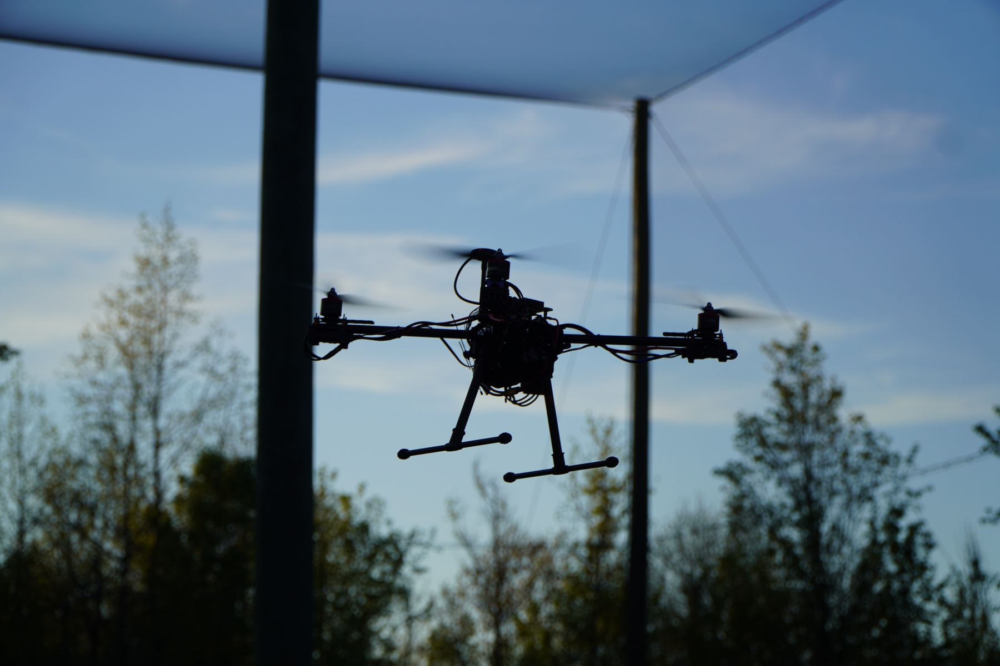
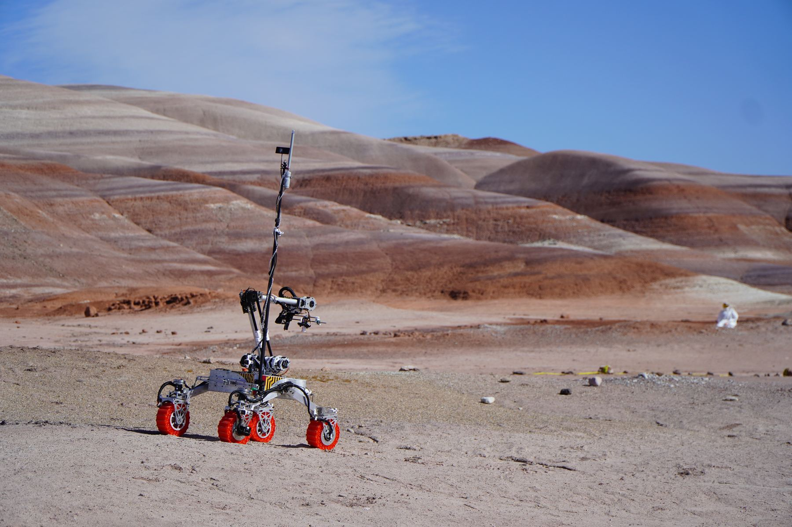

1
UMD Loop
University Rover Challenge · Drone subteam
Loop builds a Mars-style rover and a drone that supports it for the University Rover Challenge. I'm designing the drone's payload gripper for URC 2027. It has to pick up irregular objects, so rigid plastic gears and mounts carry the load while compliant TPU fingers in a Fin Ray pattern wrap around whatever shape they close on.
I joined through Challenge Week, where my 8-person group built a 6-DoF miniature arm controller in a week.
| Payload | 1 kg |
| Gripper mass | < 300 g |
| Fingers | TPU, Fin Ray pattern |
| Drive | Aluminum gears |